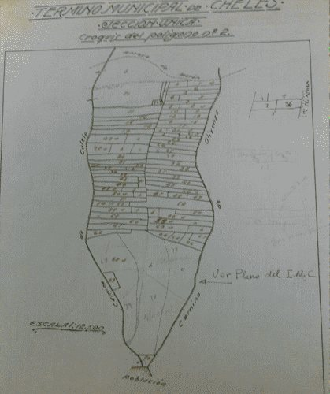

Gabinete catastral
Nos ocupamos de los problemas de su finca con el Catastro: la superficie no coincide con la escritura, un lindero está mal dibujado, hay una obra que no consta o la notaría le pide un GML, el fichero con las coordenadas de la finca. Trabajamos sobre todo para particulares, y también para despachos, notarías y ayuntamientos.

Los casos más habituales
Con la referencia catastral podemos decirle qué camino tiene su caso y qué hace falta.
La superficie no coincide con la escritura
Medimos la finca y preparamos su GML. Con él se pide la corrección al Catastro y, si quiere, se puede llevar también al Registro.
Un lindero está mal dibujado
Preparamos el GML con las coordenadas reales del lindero, para pedir la corrección con su informe de validación gráfica.
La notaría le pide un GML
Hace falta para inscribir la forma real de la finca, una segregación o una división. Se lo preparamos para que pueda pedirse el informe de validación gráfica.
Hay una obra que no consta, o una que ya no existe
Una obra nueva, una ampliación o una demolición se declaran al Catastro en los dos meses siguientes al cambio. Le explicamos qué hace falta para declararla.
El valor catastral no cuadra
A veces el fallo está en un dato: la superficie, el uso, la antigüedad o la calidad de la construcción. Lo revisamos y, si está mal, se pide la corrección.
Quiere segregar o dividir
Lo contamos en segregaciones y particiones.
Qué es el GML
Es el fichero con las coordenadas de los linderos de su finca, en el formato que leen el Catastro y el Registro. Dice exactamente dónde está la finca, algo que la escritura y el plano catastral no siempre dicen.
- Para qué sirve. Para corregir la superficie o un lindero, para segregar o dividir, y para inscribir en el Registro la forma real de la finca.
- El informe de validación gráfica. Lo emite el Catastro después de comprobar cómo encaja el GML con las parcelas de alrededor. Si es positivo, lo pueden usar la notaría y el Registro.
- Los colindantes. Si el cambio les afecta, el Registro se lo notifica y pueden oponerse. Por eso la finca tiene que estar bien medida desde el principio.
El trabajo suele ir así: medimos la finca en el terreno o con el dron, dibujamos el GML con coordenadas oficiales y, con el informe de validación gráfica, la notaría y el Registro hacen su parte. A nosotros nos toca que el plano y el fichero respondan a lo que hay en el terreno; la inscripción la decide el registrador.
Cómo se corrige un dato del Catastro
Declaración
Si el cambio lo ha hecho usted (una obra, una segregación, un cambio de cultivo), se declara en los dos meses siguientes. Cuando consta en una escritura con la referencia catastral, lo comunican la notaría o el Registro.
Subsanación de discrepancias
Sirve cuando el Catastro tiene un dato que no coincide con la realidad. Se le comunica con pruebas; hay quince días de alegaciones, y el Catastro tiene como máximo seis meses desde el acuerdo de inicio para resolver.
Recurso
Para un error en algo que ya le han notificado, como un valor o una alteración. Hay un mes para presentar el recurso de reposición o la reclamación económico-administrativa.
El valor de referencia
Desde 2022, al comprar un inmueble de segunda mano, heredar o recibir una donación, el impuesto se calcula como mínimo sobre el valor de referencia que fija el Catastro.
- Se puede discutir pidiendo la rectificación de la autoliquidación o recurriendo la liquidación.
- Para discutirlo hay que aportar pruebas de que el inmueble vale menos.
- Hay sentencias recientes sobre este valor, así que cada caso conviene verlo también con su asesor fiscal o su abogado.
Para ayuntamientos
Hacemos el mismo trabajo de gabinete para el ayuntamiento o el organismo que lleva la gestión catastral.
- Alteraciones con su expediente: obras nuevas, reformas, segregaciones y cambios de cultivo.
- Cruces de las licencias municipales y del padrón con el Catastro.
- Carga de los cambios en las bases catastrales.
Si lo que buscan es localizar las construcciones que faltan en todo el término municipal, lo que les conviene es la teledetección catastral.
Preguntas frecuentes
La superficie del Catastro y la del Registro no coinciden. ¿Cuál vale?
La real es la que se mide en el terreno. Que la recojan el Catastro y el Registro tiene su propio trámite, y a veces hace falta contar con los colindantes.
Tengo una construcción que no aparece en el Catastro. ¿Qué hago?
Hay que declararla, y es mejor hacerlo por iniciativa propia que esperar a un requerimiento. Le explicamos qué hace falta.
Cuéntenos su caso
Mándenos la referencia catastral, o el municipio con el polígono y la parcela, y la escritura o la nota simple si la tiene. Díganos qué quiere conseguir y le explicaremos cómo se puede resolver y cuánto costaría.
- emiliocontadorbrito@gmail.com
- Calle Matilde Tagle Ortiz, 28, 5.º D, 06006 Badajoz